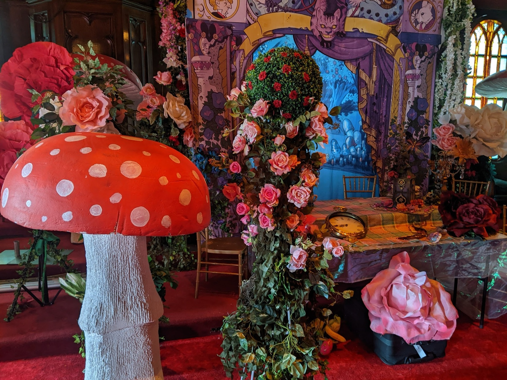
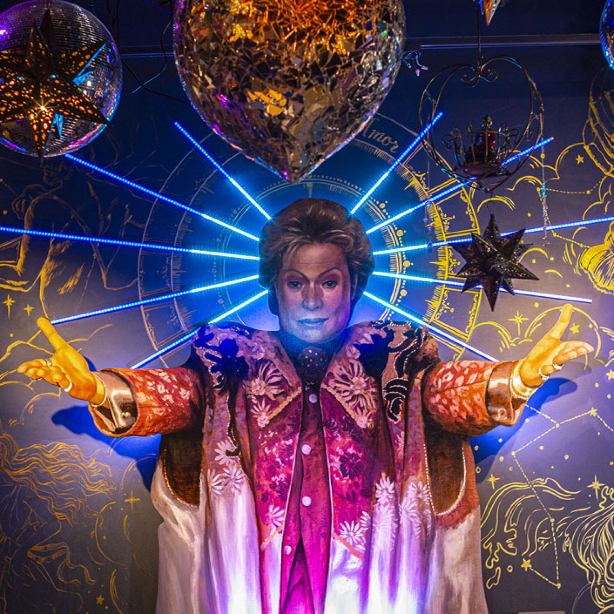
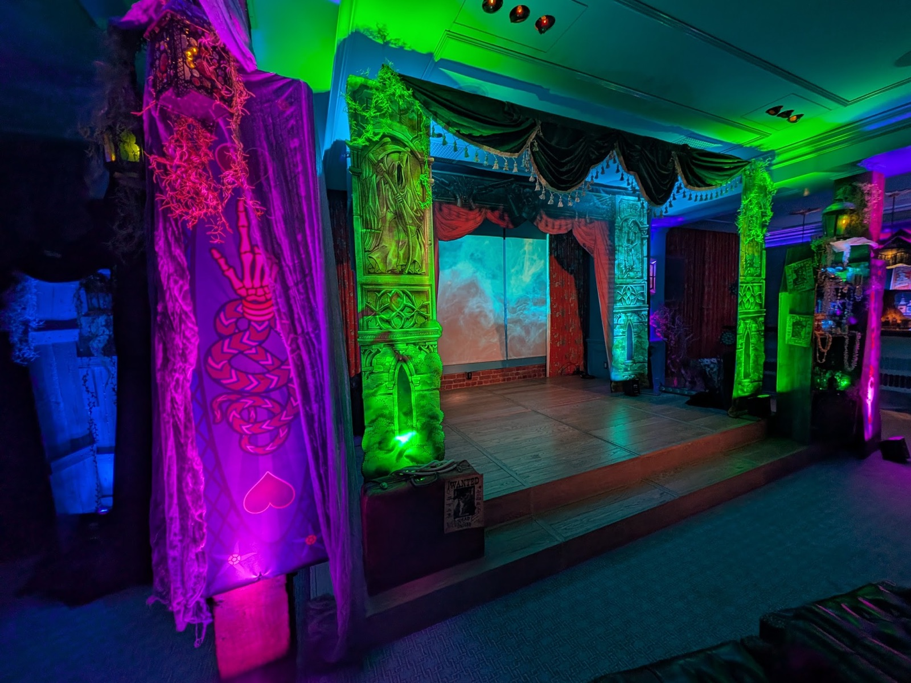
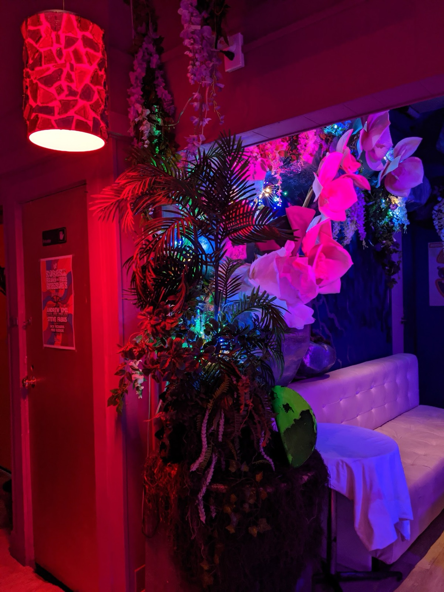

Unhinged: Housewarming
Co-wrote, designed, and directed the 100th-anniversary haunt at the Winchester Mystery House — immersive show flow, character design, multiple branching storylines, projection mapping, and triggered FX.
20,000+ guests · $2.2MM gross
Studio 37
Co-produced and directed a large-scale immersive 1970s television studio experience for Google DeepMind's corporate holiday celebration — multiple interactive sets, period-accurate design, and live entertainment programming for thousands of attendees.

Scary London & Alice's Dream
Conceptualized and executive produced a large-scale Victorian Gothic street festival for Google's Halloween celebration, transforming a sports complex into a 19th-century London underworld. The following year's "Alice's Dream" walk-through haunt combined mazes, flats, puppets, and actors across a 2-day, 10,000-guest corporate event.
10,000 guests, 2-day event
Golden Tiki
Ongoing creative director, immersive designer, fabricator, and producer — new decor elements, dynamic show-control systems, and original show writing for a bar voted Best Overall Bar in Las Vegas.

Cantina Tequila
Designer, fabricator, and creative director on this "Mexican Maximalist" venue — a 4-month build with custom animatronics and light show.

Spookeasy
Creator, producer, and director of Spookeasy — an immersive world built around Mr. Nobody, a jovial skeletal figure who helps mortals face their fears. Staged at The Battery (3 floors, 70 performers, 7 stages), the Winchester Mystery House grounds, and the historic Great Star Theater in Chinatown.

Mystic Midway
Founded Mystic Midway with Martin Caplan — a pop-up carnival of social games and alchemical scavenger hunts that ran at the Edwardian Ball from 2013 through 2016, awarding thousands of pieces of hand-crafted "Story Currency" for guest participation. Also featured at Burning Man's Carnival of Mirrors and SOCAP13 at Fort Mason.

BARbarella
Immersive lounge environment design — one of several San Francisco rooms where Scott's scenic and atmospheric work became part of the city's nightlife landscape.